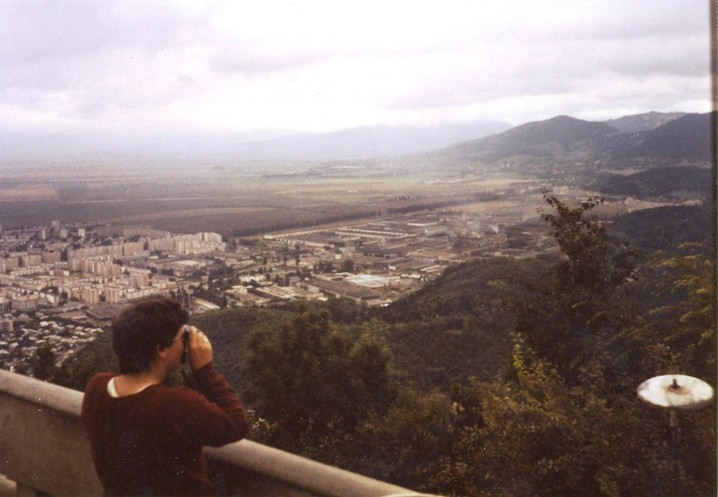

Inter Rail 1984 Day 10
Tuesday 11th September 1984
Was rudely awoken at about 1.45am by the first of the Romanian visitors, a stoney faced woman who demanded to
see our passports/visa and who made us change money. £32 for a 4 day stay which got us 603 lei. A total rip off. She was then replaced by
a ticket type who shouted at us and eventually found out our destination. Then came a lad who had another search under the seats. Next up was
a guard who searched our passports and issued us with a piece of paper and a stamp after seeing our currency receipt. He was then replaced by
another guy who asked us where we were going after Romania and checked our passport stamps. Next came the customs man who made each of us get
our packs down, open them and take the top few things out. He gave "Auditing and Reporting" a close scrut indeed.

Got a little more sleep and then got woken at 4.00am by the bloody ticket collector again. Went back to sleep and didn't wake up until the
East German lad left at about 8.00am. Had a few more dozes until we pulled in Brasov at 10.30am. Got off the train and met an Australian lass
who turned out to be a European tour guide on holiday so we latched on to her.
We found an English speaking guy in the train station (which was being cleaned!) who thought the world of Ian Rush. He told us to head into
town to look for accommodation. We walked toward the town centre through a Romany market and after 15 minutes reached a 2 star hotel where we d
ecided to book in (Jon & I). 273 lei for the night which we had to give exactly. That worked out at about £6.50 each!
Found out how to get to Bran Castle so headed for the bus station. Turned out it was the wrong station. An english speaking ticket office
person told us to meet her at 2.00pm if we wanted to get the train there with her. We disappeared and had a luke warm coke and a cake, both of
which seemed to be sugar free. By the time we got back to the train station both the woman and the train had gone. Decided to see Brasov itself.
Caught a bus into town and found the tourist information office.
It started chucking it down as we came out of the office (after having a look at the Com Tourist shop). Headed to the Biserica Neagra or
Black Church which acquired the name after being blackened by smoke from the 1689 great fire, in order to get out of the rain. It was very
pretty with a nice organ but turned out to have nothing to do with Vlad the Impaler as we had thought.
We went to a Transylvanian restaurant via the kitchens where we proceeded to make nuisances of ourselves. We wanted to warm up a bit so ordered
Soup of the Day which turned out to be tripe. I drank my soup until I could see the actual tripe stuff at the bottom. The other 2 didn't even
manage that much. It was a strange yellow colour with greasy bits and was only luke warm but it was better than nothing. The beer was local
stuff and also luke warm. The coffee was Turkish and sludge like. Left the restaurant feeling we'd been totally ripped off but in hysterics.
As the rain had stopped we attempted to get up the nearby mountain in the cable car. After 1 abortive circle of the hillside we eventually
found the bottom of the cable car and paid the equivalent of 37p for a return ticket. Took the ride up to the Panoramic Restaurant at the top.
Took a few photos of the view and decided to eat up there. The good old system was in place i.e. you're given a menu, kept waiting for a while,
and then told that actually the only thing that's available is the most expensive thing on the menu.
We ended up having steak with chips and rice plus some of Anne's vegetables, plus a bottle of red Pinot Noir. Still only cost us the
equivalent of £2 for a meal at the top of Mt. Tâmpa, which is part of the Postavaru Massif. Went down in the cable car in the dark.
It was absolutely freezing cold. Having reached the bottom we waited for a bus and almost got involved in a fight between a drunken German and
a Romany woman. Ended up walking a few stops away and caught the bus from there. Hadn't a clue where we were when we got off the bus, but
eventually oriented and headed back to our hotel.
Managed to smuggle Anne into our room where she bedded down for the night on the floor.
- Anne has been a travel guide for the last 3 years doing the circuit in Europe with camping holidays for english speaking types. She has
also taught in a school and done outdoor pursuit things with delinquent kids. She is a qualified nurse and was married to a doctor for 4 years
until he up'd and died on her for no apparent reason one night.
- She told us about Romanian types being searched incredibly thoroughly at the border to ensure they brought back only the prescribed amount
of coffee and no chocolate or anything else sweet.